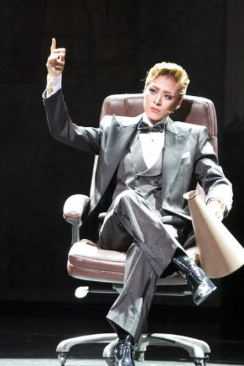

宝塚まとめ
蘭寿とむ
元花組トップスター
愛称：まゆたん、らんとむ

はい来ましたね、我らが愛すべき蘭寿とむ先輩。彼女はもう宝塚の男役になるために産まれたとしか思えませんね。 あまりのカリスマ性に異例の昇進を成し遂げた天海祐希パイセンのトップ就任の影響か、音楽学校開校史上最高倍率だった93年に なんと"主席"として入学して以来、"一度も主席を譲らない"という偉業を成し遂げたスーパーウーマンである。 また、"主席のジレンマ"という俗語があるように、主席になったからといって必ずしもトップスターになれるわけではない厳しい世界で トップスターになったことからも、「100年に一度の男役」、尊敬の念を込めて「100年さん」と呼ばせていただきたいところだ。 もちろんオール主席トップの名は伊達ではなく、ダンスのキレは超一流、 ソフト帽の被り方から襟の触り方、髪の治し方どころか口の動きまで研究し尽くされたカッコよさ。 宝塚風味の濃いめの演技、さらに声も良し。歌唱力があるというわけではないが、声量とリズム感でカバーしたことにより完全体となった彼女は、 純度100%、「男役の原液」と言っても過言ではない。特にこの「CONGA!」という演目では、「黒塗り＆南米チック」という まさに男らしさを求められるショーゆえに、”蘭寿とむ”を”蘭寿とむ”たらしめる男らしさとセクシーさが存分に発揮されている。 既に退団済みだが、当時の惜しまれようと言ったら他組の担当でさえ涙を流す程であった。まさに宝塚100周年にふさわしいトップだったと言えよう。 彼女は確かに伝説であるが、彼女に学んだ組子たちは是非後に続いてほしいものである。